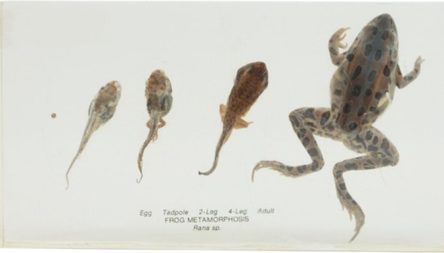

Life Cycle of a FROG
Life Cycle:
The frog lays eggs and in groups known as spwan. As the fertilized eggs mature, the yolk in each egg splits into more and more cells and begins to take the form of a tadpole, the larva of a frog. Within one to three weeks, the egg is ready to hatch, and a tiny tadpole breaks free. Tadpoles, frogs' larvae, have rudimentary gills, a mouth, and a long tail. For the first week or two after the tadpole hatches, it moves very little. During this time, the tadpole absorbs the remaining yolk left over from the egg, which provides much-needed nourishment. After absorbing the yolk, the tadpole is strong enough to swim on its own.
Most tadpoles feed on algae and other vegetation, so they are considered herbivores. They filter material from the water as they swim or tear away bits of plant material. As the tadpole continues to grow, it begins to develop hind limbs. Its body elongates and its diet grows more robust, shifting to larger plant matter and even insects. Later in development, front limbs grow and tails shrink. Skin forms over the gills.
At approximately 12 weeks of age, the tadpole's gills and tail have been fully absorbed into the body, meaning that the frog has reached the adult stage of its life cycle. It is now ready to venture out onto dry land and, in time, repeat the life cycle.